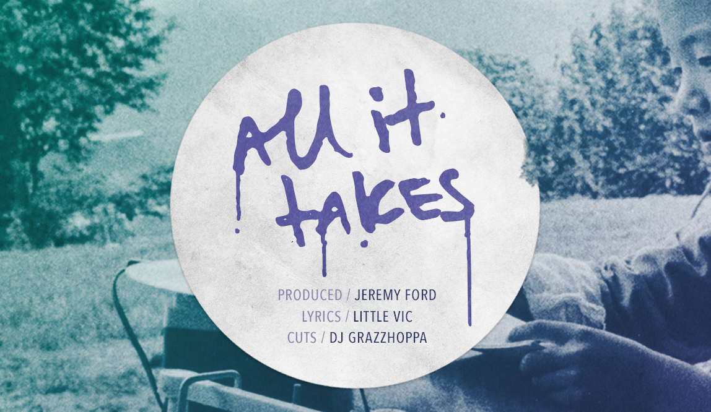

Graphic design Music production Personal
"All It Takes" is a self-produced hip hop single featuring Little Vic, an incredibly talented emcee from Long Island, NY. Vic's catalogue includes collaborations with legendary producers and rappers like DJ Premier, Erick Sermon, Nature, Rhymefest, 88-Keys, and Buckwild.
The artwork features a gradient-duotoned vintage photograph of international children listening intently to vinyl records outdoors (we can assume they're students). Conceptually, I really liked the idea of Vic's music being so good that people from all over the world enjoy it, in any environment, at any age. I also liked the notion that his lyricism and wordplay is so poetic and intricate that teachers use his music as educational material. The awe-struck expression on the girl's face in the foreground was especially charming and I imagined a similar expression on the faces of Vic's listeners. However the imagery may be interpreted, the implication is that the children are listening to Vic's music.
The song title lockup was executed by customizing a handwritten-style typeface and adding "paint drips," which intended to make it look graffitied. For applications of the artwork that had a larger area, like the YouTube graphic, I moved the title lockup to a "hype sticker," which occupied additional real estate and also gave the artwork more texture and depth.
